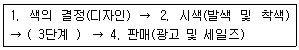
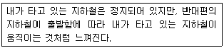
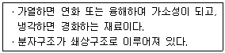
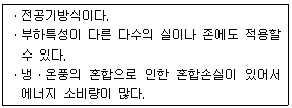
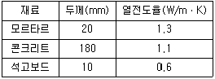

실내건축기사(구) (2012-03-04 기출문제)
1과목: 실내디자인론
1. 주거공간에 관한 설명으로 옳은 것은?
- 한식 침실이 양식 침실보다 가구의 점유 면적이 크다.
- 한식 침실은 소박하고 안정되기 보다는 화려하고 복잡하다.
- 양식 침실이 한식 침실보다 용도면에 있어서 융통성이 크다.
- 전통 한옥의 공간구조는 남성과 여성의 생활공간이 분리되어 있다.
(정답률: 73%)

2. 다음 중 실내디자인의 평가시 고려하여야 할 사항과 가장 거리가 먼 것은?
- 심미성
- 기능성
- 경제성
- 유행성
(정답률: 89%)
3. 의자 및 소파에 관한 설명으로 옳은 것은?(오류 신고가 접수된 문제입니다. 반드시 정답과 해설을 확인하시기 바랍니다.)
- 카우치(couch)는 몸을 기댈 수 있도록 좌판의 한쪽 끝이 올라간 형태를 갖는다.
- 체스터필드(chesterfield)는 쿠션성이 좋도록 솜, 스폰지 등의 속을 많이 채워 넣고 천으로 감싼 소파이다.
- 풀업 체어(pull-up chair)는 필요에 따라 이동시켜 사용할 수 있는 간의의자로 가벼운 느낌의 형태를 갖는다.
- 세티(settee)는 몸을 축 늘여 쉰다는 의미를 가진 소파로 머리와 어깨부분을 받칠 수 있도록 한쪽 부분이 경사져 있다.
(정답률: 38%)
4. 한국의 전통가구 중 장에 관한 설명으로 옳지 않은 것은?
- 단층장은 머릿장이라고도 불리운다.
- 이층장이나 삼층장은 보통 남성공간인 사랑방에 사용되었다.
- 이불장은 금침과 베개를 겹겹이 쌓아두는 장으로 보통 2층으로 된 것이 많다.
- 의걸이장은 외관의장에 따라 만살의걸이, 평의걸이, 지장의걸이로 구분할 수 있다.
(정답률: 83%)
5. 실내디자인 전개에서 계획조건 중 외부적 조건에 속하지 않는 것은?
- 개구부의 위치
- 소화설비의 위치
- 도로관계 및 상권
- 공간 사용자들의 행태
(정답률: 87%)
6. 형태 심리학의 지각 원리에 관한 설명으로 옳지 않은 것은?
- 폐쇄성이란 완전히 시각 요소들을 불완전한 것으로 지각하는 성향을 말한다.
- 유사성은 형태, 규모, 색 등의 시각적 요소가 유사할 때 서로 연관되어 보이는 현상이다.
- 도형과 배경의 법칙은 도형과 배경이 번갈아 보이면서 다른 형태로 지각되는 심리이다.
- 근접성은 가까이 있는 시각적 요소들을 패턴이나 그룹으로 인지학 되는 특성을 말한다.
(정답률: 65%)
7. 실내공간 구성요소 중 벽에 관한 설명으로 옳지 않은 것은?
- 높이 600mm 이하의 벽은 상징적 경계로서 두 공간을 상징적으로 분할한다.
- 높이 1200mm 정도의 벽은 통행은 어려우나 시각적으로 개방된 느낌을 준다.
- 실내공간 구성요소 중 가장 많은 면적을 차지하며 일반적으로 가장 먼저 인지된다.
- 인간의 시선과 동작을 차단하며 소리의 전파, 열의 이동을 차단하는 수평적 요소이다.
(정답률: 76%)
8. 리듬의 유형 중 어떠한 조형요소가 시간적 또는 공간적인 간격을 두고 다른 형태로 변해가는 과정적인 의미를 지닌 것은?
- 반복
- 교체
- 점이
- 회전
(정답률: 78%)
9. 오피스 랜드스케이프(office landscape)에 관한 설명으로 옳지 않은 것은?
- 시각적인 프라이버시 확보가 어렵고, 소음상의 문제가 발생할 수 있다.
- 산만하고 인위적인 분위기를 정리하기 위해 고정된 칸막이 벽으로 구획한다.
- 오피스 작업을 사람의 흐름과 정보의 흐름을 매체로 효율적인 네트워크가 되도록 배치하는 방법이다.
- 사무공간의 능률향상을 위한 배려와 개방공간에서의 근무자의 심리적 상태를 고려한 사무공간 계획 방식이다.
(정답률: 78%)
10. 황금비를 바탕으로 한 대수 개념의 모듈 체계인 모듈러(modulor)의 개념을 만든건축가는?
- 알바 알토
- 르 꼬르뷔제
- 미스 반 데 로에
- 프링크 로이드 라이트
(정답률: 79%)
11. 전시공간의 특수전시기법에 관한 설명으로 옳은 것은?
- 하모니카 전시는 통일된 전시내용이 규칙적이거나 반복적으로 나타날 때 적용이 용이하다.
- 파노라마 전시는 벽이나 천장을 직접 이용하지 않고 전시 공간의 중앙에 전시물을 배치하는 전시기법이다.
- 아일랜드 전시는 현장감을 가장 실감나게 표현하는 기법으로 한정된 공간 속에서 배경스크린과 실물 종합전시가 이루어진다.
- 디오라마 전시는 연속적인 주제를 연관성 깊게 표현하기 위해 선형으로 연출하는 전시기법으로 맥락이 중요하다고 생각될 때 사용된다.
(정답률: 76%)
12. 공간을 분할하는 방법에 관한 설명으로 옳지 않은 것은?
- 열주를 이용한 구획은 기둥의 간격과 높이에 관계없이 동일한 공간분할의 효과가 있다.
- 이동 스크린벽을 사용할 경우 필요에 따라 공간을 구획할 수 있으므로 공간 사용에 융통성이 있다.
- 공간을 어떤 요소로 구획하느냐에 따라 차단적구획, 심리ㆍ도덕적 구획, 지각적 구획으로 구분할 수 있다.
- 마감재료의 재질감, 패턴, 색 등을 이용한 변화나 서로 다른 재료를 사용하여 공간분할의 효과를 얻을 수 있다.
(정답률: 73%)
13. 수직벽면을 및으로 쓸어 내리는 듯한 효과를 주기 위해 비태칭 배광방식의 조명기구를 사용하여 수직벽면에 균일한 조도의 빛을 비추는 조명 연출기법은?
- 그레이징(glazing) 기법
- 빔플레이(beam play) 기법
- 월워싱(wall washing) 기법
- 그림자연출(shadow play) 기법
(정답률: 81%)
14. 실내디자인에 관한 설명으로 옳지 않은 것은?
- 실내디자인은 내부공간에 대한 계획 및 실행과정이며 그 결과이다.
- 실내디자인은 목적을 위한 행위로 그 자체가 목적이 아니라 특정한 효과를 얻기 위한 수단이다.
- 실내디자인은 미술의 한 분야로 미적인 측면에서 실내를 아름답게 꾸미는 것만을 의미한다.
- 실내디자인은 인간이 생활하는 실내공간을 보다 아름답고 능률적이며 쾌적한 환경으로 창조하는 디자인 행위 일체를 말한다.
(정답률: 84%)
15. 실내디자인의 원리 중 스케일과 비례에 관한 설명으로 옳지 않은 것은?
- 비례는 물리적 크기를 선으로 측정하는 기하학적 개념이다.
- 스케일을 검토하는데 있어 가장 중요한 대상이 되는 것은 공간이다.
- 공간 내의 비례관계는 평면, 입면, 단면에 있어서 입체적으로 평가되어야 한다.
- 스케일은 인간과 물체와의 관계이며, 비례는 물체와 물체 상호간의 관계를 갖는다.
(정답률: 46%)
16. 실내디자인의 프로그래밍 진행단계로 가장 알맞은 것은?
- 조사 - 분석 - 결정 - 종합 - 목표설정
- 목표설정 - 조사 - 분석 - 종합 - 결정
- 목표설정 - 분석- 조사 - 종합 - 결정
- 조사 - 분석 - 종합 - 목표설정 - 결정
(정답률: 77%)
17. 실내디자인의 과정을 “프로그래밍 - 디자인 - 시공 - 사용 후 평가”로 볼 때 사용 후 평가에 관한 설명으로 옳지 않은 것은?
- 문제점을 발견하고 다음 작업의 기초자료로 활용한다.
- 시공 후 실내디자인에 대한 거구자의 만족도를 조사하는 것이다.
- 다음 작업의 시행착오를 줄이기 위하여 디자이너가 평가하는 것이 보통이다.
- 입주 후 충분한 시간이 경과한 후 실시하는 것이 결과의 정확도를 높일 수 있다.
(정답률: 75%)
18. 선이 갖는 조형심리적 효과에 관한 설명으로 옳은 것은?
- 곡선을 경쾌하며 남성적인 느낌을 들게 한다.
- 수직선을 구조적인 높이와 존엄성을 느끼게 한다.
- 사선은 생동감이 넘치는 에너지를 느끼게 하며, 동시에 안정되고 편안함을 준다.
- 수평선은 확대, 무한 등의 느낌을 줌과 동시에 감정을 동요시키는 특성이 있다.
(정답률: 82%)
19. 상점의 동선계획에 관한 설명으로 옳지 않은 것은?
- 고객동선은 고객의 편의를 위해 가능한 한 짧게 한다.
- 동선의 흐름은 공간적, 물리적인 흐름뿐만이 아니라 시각적인 흐름도 원활하도록 한다.
- 고객동선은 흐름의 연속성이 상징적, 지각적으로 분할되지 않는 수평적 바닥이 되도록 한다.
- 동선은 고객동선, 종업원동선, 상품동선으로 구분할 수 있으며, 각각의 동선은 교차되지 않도록 한다.
(정답률: 86%)
20. 다음 중 공간의 레이아웃(lay out)과 가장 밀접한 관계를 가지고 있는 것은?
- 재료계획
- 동선계획
- 설비계획
- 색채계획
(정답률: 83%)
2과목: 색채학
21. 다음 중 채도에 관한 설명으로 틀린 것은?
- 순색에 흰색을 섞으면 채도가 낮아진다.
- 순색에 검정을 섞으면 채도가 낮아진다.
- 채도는 무채색에만 있고, 유채색에는 없다.
- 순색에 회색을 섞으면 탁색이 된다.
(정답률: 82%)
22. 색 지각을 일으키는 가장 기본적인 요건은?
- 물체
- 프리즘
- 빛
- 망막
(정답률: 77%)
23. CIE 표색방법에 관한 설명 중 옳은 것은?
- 적, 녹, 청의 3색광을 혼합하여 3자극치에 따른 표색 방법
- 색필터의 중심으로 인한 다른 색상의 표색 방법
- 일정한 원색을 혼합하여 얻는 방법
- 색의 차를 수량으로 나타내는 방법
(정답률: 63%)
24. 저드(D. B. Judd)의 색채조화론과 관계없는 것은?
- 질서의 원리
- 동류의 원리
- 숙지의 원리
- 모호성의 원리
(정답률: 62%)
25. 다음 유채색의 수식 형용사 중 가장 채도가 높은 것은?
- 연한
- 선명한
- 흐린
- 밝은
(정답률: 85%)
26. 신인상파 화가들의 점묘화, 교직물(交織物), 사진인쇄 등에 이용되는 색의 혼합현상은?
- 회전혼합
- 병치혼합
- 감산혼합
- 색료혼합
(정답률: 72%)
27. 먼셀의 색상환에서 BG는 무슨 색인가?
- 청록
- 연두
- 남색
- 노랑
(정답률: 87%)
28. 물체표면의 색은 빛이 각 파장에 어떠한 비율로 반사되는가에 따라 판단되는데 이것을 무엇이라 하는가?
- 분광분포율
- 분광반사율
- 분광조성
- 분광
(정답률: 82%)
29. 분광반사율의 분포가 서로 다른 두 개의 색자극이 광원의 종류와 관찰자 등의 관찰조건을 일정하게 할 때에만 같은 색으로 보이는 경우는?
- 조건등색
- 연색성
- 색각이상
- 발광성
(정답률: 63%)
30. 먼셀기호 ‘5Y 8/10’에서 숫자 10은?
- 색상
- 명도
- 색조
- 채도
(정답률: 84%)
31. 감법혼색에 관한 설명 중 옳은 것은?
- 무대 조명에 많이 사용한다.
- 컬러 인쇄에 많이 사용한다.
- 컬러 TV에 많이 사용한다.
- 흑백 TV에 많이 사용한다.
(정답률: 64%)
32. 다음 중 진출팽창과 후퇴수축을 가장 크게 나타내는 관계는?
- 검정과 흰색
- 노랑과 초록
- 빨강과 초록
- 파랑과 보라
(정답률: 53%)
33. 우리가 영화를 볼 때 규칙적으로 화면이 연결되거나 언제나 상이 지속되어 보이는 것은 어떤 현상에 의한 것인가?
- 푸르킨예 현상
- 잔상현상
- 동화현상
- 연상작용
(정답률: 78%)
34. 정상적인 눈을 가진 사람도 미소한 색을 볼 때 일어나는 색각혼란은?
- 색상이상
- 잔상현상
- 소면적 제 3 색각이상
- 주관색 현상
(정답률: 44%)
35. 하늘의 색과 같이 넓이의 느낌은 있으나 거리감이 불확실하고 물체감 없이 색 자체만을 느끼게 하는 색은?
- 표면색
- 공간색
- 광원색
- 면색
(정답률: 55%)
36. 색입체를 수평으로 절단하면 중심축의 회색 주위에 나타나는 모양은? (단, 먼셀 색체계 기준)
- 같은 채도의 여러 색상
- 같은 색상의 채도 변화
- 같은 명도의 여러 색상
- 같은 명도의 같은 색상
(정답률: 54%)
37. 다음 중 우리가 지각할 수 없는 파장은? (단, 1nm = 10-9m)
- 320nm
- 440nm
- 560nm
- 680nm
(정답률: 72%)
38. 물체가 가지고 있는 정확한 색체와 형체를 감지할 수 있는 것은?
- 각막
- 망막
- 맥락막
- 공막
(정답률: 79%)
39. 오스트발트의 색체 조화론과 관계있는 것은?
- 동등조화, 유사조화
- 등백색 계열 조화, 등순색 계열 조화
- 대비조화, 유사조화
- 제1부조화, 제2부조화
(정답률: 75%)
40. 제품의 색채관리는 통상 4단계로 나눌 수 있는데 3단계에 해당되는 것은?

- 색 이미지 조사
- 기호색 조사
- 검사(시감촉색, 계기촉색)
- 색의 감정효과 적용
(정답률: 60%)
3과목: 인간공학
41. 다음 중 인간의 눈과 카메라의 구조를 유사한 기능으로 비교할 때 잘못 연결한 것은?
- 동공 - 조리개
- 수정체 - 렌즈
- 망막 - 필름
- 홍채 - 셔터
(정답률: 74%)
42. 다음 중 소리의 강도를 나타내는 단위로 옳은 것은?
- cycle
- rem
- SHU
- dB
(정답률: 83%)
43. 다음 중 감각보관에 관한 설명으로 옳은 것은?
- 감각보관은 자동적으로 기억되지 않으며, 반드시 암호화되어 작업기억으로 이전되어야 한다.
- 감각기관내의 정보는 감각형태 그대로 유지되지 않고, 암호화되어 기억된다.
- 향보관은 일반적으로 약 1초 이내 지속되지만, 상보관은 수 초나 지속된 후 사라진다.
- 일반적으로 알려진 감각보관기구는 시각계통의 상보관(iconic storage)과 청각계통의 향보관(echonic storage)이다.
(정답률: 40%)
44. 다음 중 조도의 단위가 아닌 것은?
- lumen/m2
- lux
- nit
- foot-candle(fc)
(정답률: 68%)
45. 다음 중 입식 작업대의 높이를 결정하는 방법으로 적절하지 않은 것은?
- 일반적으로 섬세한 작업인 경우 팔꿈치 높이보다 높아야 한다.
- 경조립의 경우 작업대의 높이는 팔꿈치보다 5 ~ 10 cm 정도 낮은 것이 적당하다.
- 힘을 가하는 중작업의 경우에는 팔꿈치보다 5 ~ 10 cm 정도 높은 것이 적당하다.
- 작업대의 높이는 개인, 작업의 종류에 따라 조절할 수 있도록 제작하는 것이 좋다.
(정답률: 71%)
46. 다음 중 내이(內耳)에 관한 설명으로 옳은 것은?
- 소리를 모아주는 역할을 한다.
- 소리를 청신경 중추에 보내는 역할을 한다.
- 고막, 고실, 이관, 정원창, 난원창으로 구성되어 있다.
- 목과 코로 연결되어 있다.
(정답률: 62%)
47. 근육 운동을 시작한 직후에는 혐기성 대사에 의하여 에너지가 공급된다. 이 때 소비되는 에너지원이 아닌 것은?
- 지방
- 글리코겐
- 크레아틴 인산(CP)
- 아데노신 삼인산(ATP)
(정답률: 58%)
48. 다음 중 동작경제원칙에 있어 신체 사용에 관한 원칙에 해당하는 것은?
- 가능하다면 쉽고도 자연스러운 리듬이 생기도록 동작을 배치한다.
- 모든 공구나 재료는 자기 위치에 있도록 한다.
- 공구의 기능을 결합하여 사용하도록 한다.
- 공구나 재료는 작업동작이 원활하게 수행되도록 위치를 정해준다.
(정답률: 53%)
49. 다음 중 암호체계의 사용에 있어서 수행해야 할 직무가 최소의 정보 변환을 필요로 할 때 최대가 되는 것은?
- 검출성(detectability)
- 변별성(discriminability)
- 양립성(compatibility)
- 표준화(standardzition)
(정답률: 57%)
50. 다음 중 사람이 팔을 펴서 상하로 움직이는 작업을 수행할 때 인간공학적으로 가장 좋은 영역은?
- 허리를 구부린 높이의 영역
- 손을 머리 위로 뻗어야 하는 영역
- 허리와 무릎을 구부려야 하는 영역
- 손을 어깨높이 정도로 올릴 필요가 있는 영역
(정답률: 63%)
51. 다음 중 소음원(noise source)를 통제하는 방법과 가장 거리가 먼 것은?
- 소음원의 위치 변경
- 덮개(enclosure) 등의 사용
- 차폐장치 및 흡음재 사용
- 귀마개(earplug) 사용
(정답률: 72%)
52. 다음 중 조종-반응 비율(Control-Response ratio)에 관한 설명으로 틀린 것은?
- 표시장치에 있어서 지침이 움직이는 총량에 대한 제어장치 움직임의 총량을 뜻한다.
- 조종 장치의 민감도를 나타낼 수 있다.
- 조종-반응비가 클수록 표시장치의 이동시간이 적게 걸리므로 정확한 제어가 용이하다.
- 조종-반응비가 작을수록 민감한 표시장치라 할 수 있다.
(정답률: 65%)
53. 다음 중 반사율(%)을 구하는 식으로 옳은 것은?
- 광도/조도
- 조도/광도
- 광량/거리2
- 조도/거리2
(정답률: 54%)
54. 다음 중 후각에 관한 설명으로 틀린 것은?
- 식별이 가능한 냄새의 수는 훈련에 의하여 늘릴 수 있다.
- 후각에 대한 민감도는 특정 물질과 냄새를 맡는 개인에 따라 다르다.
- 후각은 특정한 냄새를 절대적으로 식별하는 데에는 뛰어나지 못하다.
- 전반적으로 후각은 냄새의 존재를 탐지하는 것보다 많은 자극 중 하나를 식별하는데 효과적이다.
(정답률: 53%)
55. 다음 중 표시장치에 있어 청각 표시장치가 시각 표시장치보다 우수한 경우는?
- 정보가 시간적인 사상을 다루는 경우
- 직무상 수신자가 한 곳에 머무르는 경우
- 정보가 후에 재참조되는 경우
- 정보가 복잡하고 긴 경우
(정답률: 53%)
56. 다음 중 인체측정치의 최대집단치를 적용하는 대상으로 적절하지 않은 것은?
- 탈출구의 넓이
- 출입문의 높이
- 그네의 지지 하중
- 버스의 손잡이 높이
(정답률: 59%)
57. 다음 중 조명에 관한 설명으로 옳은 것은?
- 실내의 빛을 효과적으로 배분하기 위해서는 반사율이 높은 표면이 좋다.
- 일반적으로 화면과 그 인접 주변간의 1:3의 광도비가 추천된다.
- 실내 면의 추천 반사율은 천장에서 바닥으로 갈수록 증가하는 것이 좋다.
- 광원으로부터 직사휘광을 처리하는 방법은 광원의 위도를 늘리고, 광원의 수를 줄인다.
(정답률: 44%)
58. 다음 중 자유도가 가장 큰 관절은?
- 어깨
- 팔꿈치
- 손가락
- 무릎
(정답률: 65%)
59. 다음 설명에 해당하는 운동의 시지각은?

- 안구운동
- 운동잔상
- 유도운동
- 자유운동
(정답률: 51%)
60. 다음 중 에 피로에 관한 설명으로 틀린 것은?
- 심리학적으로는 욕구수준을 떨어뜨린다.
- 생리적으로는 근육에서 발생할 수 있는 힘의 저하를 초래한다.
- 보통 하루정도의 숙면 등으로 회복이 가능한 정도를 “만성피로 또는 곤비”라 한다.
- 피로발생은 부하조건과 작업능력과의 상대적 관계로 생기는 부담에 의한 것이다.
(정답률: 79%)
4과목: 건축재료
61. 보통콘크리트와 비교한 폴리머합침콘크리트의 특징으로 옳지 않은 것은?
- 강토와 탄성이 크다.
- 내약품성이 우수하다.
- 수밀성이 양호하다.
- 내화성이 양호하다.
(정답률: 33%)
62. 아름다운 결을 갖는 고급목재로부터 무늬목을 얻는데 쓰이는 합판의 제조법과 가장 거리가 먼 것은?
- 로터리 베니어
- 소우드 베니어
- 반원 슬라이스드 베니어
- 슬라이스드 베니어
(정답률: 40%)
63. 셀프레벨링재에 대한 설명으로 옳지 않은 것은?
- 석고계 셀프레벨링재는 석고, 모래, 경화지연제 및 동화제로 구성된다.
- 시멘트계 셀프레벨링재는 포틀랜드시멘트, 모래, 분산제 및 유동화제로 구성된다.
- 석고계 셀프레벨링재는 차수성이 좋아 옥외 및 실내에서 모두 사용한다.
- 셀프레벨링재 시공 후, 요철부는 연마기로 다듬고 기포는 된비빔석고로 보수한다.
(정답률: 75%)
64. 뿜칠공사에서 시멘트 규산칼슘판의 적용바탕 조정에 대한 설명 중 옳은 것은?
- 3개월 이상 건조시킨다.
- 합성수지 용제형 실러를 바른다.
- 폴리머시멘트 모르타르로 충전한다.
- 오염, 부착물, 기름을 제거하고 녹떨기를 한다.
(정답률: 35%)
65. 미장공사에 대한 설명으로 옳지 않은 것은?
- 돌로마이트 플라스터는 소석회보다 점성이 낮아 풀이 필요하며 건조수축이 적은 특징이 있다.
- 회반죽 바름은 소석회를 사용한다.
- 회반죽 바름에 사용하는 해초풀은 채취 후 1~2년 경과된 것이 좋다.
- 석고플라스터는 경화-건조시 치수 안정성이 우수하다.
(정답률: 57%)
66. 다음 중 스트레이트 아스팔트의 특징으로 옳지 않은 것은?
- 아스팔트 펠트, 아스팔트 루핑의 방수재료 원료로 사용된다.
- 온도에 의한 변화가 크다.
- 신장성, 점착성, 방수성이 우수하여 주로 옥상방수에 사용된다.
- 원유를 증류하여 피치가 되기 전에 유출량을 제한하여 잔류분을 반고체형으로 만든 것이다.
(정답률: 35%)
67. 못이나 철선 등으르 만드는 가공법은?
- 압연
- 단조
- 인발
- 주조
(정답률: 30%)
68. 유리섬유로 보강하면 강철과 유사한 강도를 나타내며 구조제나 설비재로 이용되는 합성수지는?
- 프란수지
- 폴리에스테르수지
- 폴리우레탄수지
- 에폭시수지
(정답률: 50%)
69. 도장결함 중 광택불량의 원인으로 가장 거리가 먼 것은?
- 바탕재의 흡수가 큰 경우
- 너무 두껍게 바른 경우
- 초벌바름면이 너무 편평할 경우
- 백화현상이 발생한 경우
(정답률: 74%)
70. 다음 중 금속의 부식방지에 관한 대책으로 옳지 않은 것은?
- 표면을 평활하게 하고 가능한 한 건조상태로 유지할 것
- 부분적으로 녹이 나면 즉시 제거할 것
- 이종(異種)금속을 인접 또는 접촉시킬 것
- 아연 또는 주석용액에 담가서 도금할 것
(정답률: 69%)
71. 각종 시멘트에 관한 설명으로 옳지 않은 것은?
- 고로시멘트 : 초기강도는 약간 작은 편이며 화학저항성이 높다.
- 중용열포틀랜드시멘트 : 건조수축이 작고 화학저항성이 높다.
- 백색포틀랜드시멘트 : 건축물 내외면의 마감, 각종 인조석 제조에 사용된다.
- 알루미나시멘트 : 보통포틀랜드시멘트에 비해 응결 및 경화시에 발열량이 작다.
(정답률: 42%)
72. 미장재료 중 고온소성의 무수석고를 특별한 화학처리를 한 것으로 킨즈시멘트라고도 불리우는 것은?
- 순석고 플라스터
- 혼합석고 플라스터
- 보드용 석고 플라스터
- 경석고 플라스터
(정답률: 78%)
73. 다음 중 면처리한 타일이 아닌 것은?
- 스크래치 타일
- 태피스트리 타일
- 천무늬 타일
- 보더 타일
(정답률: 40%)
74. 트래버틴(travertine)은 어떤 암석의 일종인가?
- 화강암
- 안산암
- 대리석
- 응회암
(정답률: 58%)
75. 환기공이나 방열기 덮개 등으로 사용되는 것은?
- 인서트(insert)
- 와이어메쉬(wire mesh)
- 폼타이(form tie)
- 펀칭메탈(punching metal)
(정답률: 63%)
76. 다음과 같은 특성을 가진 플라스틱의 종류는?

- 멜라민수지
- 아크릴수지
- 요소수지
- 페놀수지
(정답률: 46%)
77. 다음 중 암석의 종류가 잘못 짝지어진 것은?
- 화성암 - 석회암
- 변성암 - 대리암
- 변성암 - 사문암
- 수성암 - 사암
(정답률: 45%)
78. 화성암은 규산(SiO2)의 함유량에 따라 각각 4종류로 분류할 수 있는데 함유량과 명칭이 잘못 연결된 것은?
- 규산(SiO2)의 함유량 45% 이하 - 초염기성암
- 규산(SiO2)의 함유량 45~55% - 염기성암
- 규산(SiO2)의 함유량 55~66% - 중성암
- 규산(SiO2)의 함유량 66% 이상 - 초중성암
(정답률: 53%)
79. 다음 중 무기질 단열재에 해당하는 것은?
- 발포폴리스티렌 보온재
- 셀루로스보온재
- 규산 칼슘판
- 경질폴리우레탄폼
(정답률: 54%)
80. 다음 목재 중 판의 섬유방향을 거의 평행으로 접착가능하며 필요한 치수 및 형상을 조절할 수 있는 인공목재는?
- 집성목재
- 파티클보드
- 코펜하겐 리브판
- 연질섬유판
(정답률: 68%)
5과목: 건축일반
81. 한국의 전통사찰 본당에서 내부공간 구성의 1차 인지요소로서 주두, 소로, 첨차 등으로 이루어져 있으며 심리적이고 극적인 효과를 유도하는 구성요소는?
- 마루
- 개구부
- 천장
- 공포
(정답률: 75%)
82. 다음 중 철골에 내화피복을 하는 가장 주된 이유는?
- 비틀림을 방지하기 위하여
- 내구성을 높이기 위하여
- 화재로부터 보호하기 위하여
- 염해의 피해를 방지하기 위하여
(정답률: 63%)
83. 한국전통목구조에 대한 설명으로 옳은 것은?
- 3량집구조는 한국건축에 가장 많이 사용된 구조이다.
- 부석사 무량주선과 수덕사 대웅전은 7량집구조이다.
- 도리수와 건축규모는 비례하지 않는다.
- 한국전통건축물은 일반적으로 짝수의 도리를 가지고 있다.
(정답률: 24%)
84. 목구조에 사용하는 이음, 맞춤의 보강철물로서 큰 보에 걸쳐 작은 보를 받게 하는데 사용되는 것은?
- 띠쇠
- 감잡이쇠
- 안장쇠
- 듀벨
(정답률: 35%)
85. 목재 및 목구조에 대한 설명으로 옳지 않은 것은?
- 목재는 가볍고 열전도율이 작다.
- 목재의 접합에서 한 부재가 직각 또는 경사지어 맞추어지는 자리 또는 그 맞추는 방법을 이음이라 한다.
- 목구조는 주로 목재를 써서 뼈대를 조립한 가구식 구조를 말한다.
- 목구조는 조적구조와 같이 내력벽에 의하여 하중을 지반에 전달하는 것이 아니고, 구조체에 의하여 전달되는 구조이다.
(정답률: 42%)
86. 다음 중 다포계 양식의 특징이 아닌 것은?
- 창방 위에 평방을 놓아 구고적인 안정을 취한다.
- 외부출목은 2출목 이하이고 대부분 연등천장이다.
- 기둥과 기둥 사이에도 공포를 배치한다.
- 조선시대 궁궐이나 사찰의 전각에서 많이 사용되었다.
(정답률: 50%)
87. 다음 중 유사한 소방시설로 분류되어 설치가 면제되는 기준으로 옳게 연결된 것은?
- 연소방지설비 설치 → 스프링쿨러설비 면제
- 물분무소화설비 설치 → 스프링쿨러설비 면제
- 무선통신보조설비 설치 → 비상방송설비 면제
- 누전경보기 설치 → 비상경보설치 면제
(정답률: 82%)
88. 소방방재청장, 소방본부장 또는 소방서장은 소방특별조사를 하려면 며칠 전에 관계인에게 조사대상, 조사기간 및 조사 사유 등을 서면으로 알려야 하는가?
- 5일
- 7일
- 9일
- 12일
(정답률: 71%)
89. 조적구조에 관한 설명 중 옳지 않은 것은?
- 조적구조는 내화성, 내구성 등의 성능을 고루 갖추면서 시공이 용이한 편이다.
- 기초침하 등으로 벽면이 쉽게 균열이 생긴다.
- 조적구조는 3~4층 이하의 소규모 건축물의 내력벽으로 널리 쓰인다.
- 횡력 및 충격에 강하고 습기에 의해 동파되지 않는다.
(정답률: 62%)
90. 윌리엄 모리스 등에 의하여 주도되었던 건축운동은 무엇인가?
- 세제션
- 데 스틸
- 예술과 수공예
- 바우하우스
(정답률: 41%)
91. 문화 및 집회시설, 업무시설, 숙박시설 등에 배연설비를 설치해야 할 건축물은 최소 몇 층 이상인가?
- 3층
- 6층
- 9층
- 11층
(정답률: 55%)
92. 철근콘크리트 슬래브에서 휨 주철근의 간격 기준으로 옳은 것은? (단, 콘크리트 장선구조가 아닌 경우)
- 슬래브 두께의 4배 이하, 또한 450mm 이하
- 슬래브 두께의 4배 이하, 또한 600mm 이하
- 슬래브 두께의 3배 이하, 또한 450mm 이하
- 슬래브 두께의 3배 이하, 또한 600mm 이하
(정답률: 56%)
93. 아르누보 건축가와 작품의 연결이 잘못된 것은?
- 빅토르 오르타(Victor Horta) - 타셀주택
- 안토니오 가우디(Antonio Gaudi) - 카사 밀라
- 핵토르 귀마르(Hector Guimard) - 파리 지하철역 입구
- 피터 베렌스(Peter Berens) - 귀엘 공원
(정답률: 53%)
94. 블록쌓기에 관한 설명 중 옳지 않은 것은?
- 블록벽체에는 온도나 습도의 변화에 따라 벽체에 발생하는 수평방향의 응력을 조절하기 위하여 조절 줄눈을 설치할 수 있다.
- 블록의 이음색 및 빈속에 콘크리트를 부어 넣을 때에는 둥근막대로 충분히 다지면서 채워넣는다.
- 인방블록쌓기는 인방블록, 혹은 가로근용 블록을 창문틀의 좌우 턱에 20cm 이상 물린다.
- 블록은 살두께가 두꺼운 쪽이 아래로 향하게 하여 쌓는다.
(정답률: 48%)
95. 공동주택과 오피스텔의 난방설비를 개별난방방식으로 하는 경우의 기준으로 옳지 않은 것은?
- 보일러실의 윗부분에는 그 면적이 0.2m2 이상인 환기창을 설치한다.
- 보일러실의 윗부분과 아랫부분에는 각각 지름 10cm 이상의 공기흡입구 및 배기구를 항상 열려있는 상태로 바깥공기에 접하도록 설치한다.
- 기름 보일러를 설치하는 경우에는 기름저장소를 보일러실 외의 다른 곳에 설치한다.
- 보일러의 연도는 내화구조로서 공동연도로 설치한다.
(정답률: 42%)
96. 철근콘크리트 슬래브에서 단변길이 lx, 장변길이 ly라 할 때 2방향 슬래브가 되기 위한 조건은?
- ly/lx ≧ 1
- ly/lx ≦ 1
- ly/lx ≦ 2
- ly/lx ≧ 2
(정답률: 62%)
97. 한옥에서 추녀를 걸지 않는 지붕구조는?
- 팔작지붕
- 맞배지붕
- 우진각지붕
- 사모지붕
(정답률: 53%)
98. 1층의 층고는 5m, 2층부터 11층까지의 층고는 3m, 각 층의 바닥면적은 2000m2인 업무시설에 설치하여야 하는 비상용승강기의 최소 대수는?
- 설치대상이 아님
- 1대
- 2대
- 3대
(정답률: 51%)
99. 다음 중 소화활동설비에 포함되지 않는 것은?
- 제연설비
- 연결송수관설비
- 비상방송설비
- 비상콘센트설비
(정답률: 56%)
100. 건축물의 건축허가를 신청하는 경우 에너지절약계획서를 제출하여야 하는 대상건축물에 해당하는 것은?
- 제1종 근린생활시설 중 목욕장으로서 당해 용도로 사용되는 바닥면적의 합계가 500m2인 건축물
- 수련시설 중 유스호스텔로서 당해 용도로 사용되는 바닥면적의 합계가 1500m2인 건축물
- 운동시설 중 실내수영장으로서 당해 용도로 사용되는 바닥면적의 합계가 450m2인 건축물
- 문화 및 집회시설(동ㆍ식물원은 제외)로서 당해 용도로 사용되는 바닥면적의 합계가 8000m2인 건축물
(정답률: 35%)
6과목: 건축환경
101. 인체의 열방출 과정 중 일반적으로 가장 높은 비율을 차지하는 것은? (단, 전도에 의한 소실이 없는 경우)
- 관류
- 복사
- 대류
- 증발
(정답률: 50%)
102. 자연 채광방식에 관한 설명으로 옳지 않은 것은?
- 편측채광은 조도분포가 불균일하며 실 안쪽의 조도가 부족한 경향이 많다.
- 측창채광은 통풍에 유리하나 근린의 상황에 의해 채광방해가 발생할 수 있다.
- 천창채광은 비막이에 유리하며 좁은 실에서 개방된 분위기의 조성이 용이하다.
- 정측창채광은 은 실내 벽면에 높은 조도가 바람직한 미술관이나 넓은 작업면에 주광률 분포의 균일성이 요구되는 공장 등에 사용된다.
(정답률: 58%)
103. 언어의 명료도에 직접적인 영향을 주는 요인에 해당하지 않는 것은?
- 소음
- 실지수
- 잔향시간
- 음의 세기
(정답률: 63%)
104. 다음 설명에 알맞은 공기조화방식은?

- 단일덕트방식
- 이중덕트방식
- 유인 유닛방식
- 팬코일 유닛방식
(정답률: 67%)
1⑤. 음향장해 현상의 하나인 공명을 피하기 위한 대책으로 옳지 않은 것은?
- 확산체를 적절히 사용한다.
- 많은 반사재를 분산배치시킨다.
- 실의 표면을 불규칙한 형태로 한다.
- 실의 높이, 폭, 길이의 비율을 음향학적으로 바람직하도록 조절한다.
(정답률: 53%)
106. 벽체의 차음성을 높이기 위한 방법으로 옳지 않은 것은?
- 벽체의 기밀성을 높인다.
- 벽체의 투과손실을 크게 한다.
- 벽체는 되도록 무거운 재료를 사용한다.
- 일치효과를 유도할 수 있도록 벽체를 설계한다.
(정답률: 25%)
107. 풍력에 의한 환기량을 계산하려고 한다. 유입구 면적과 건물이 받고 있는 풍속을 각각 2배로 증가시켰을 경우 환기량의 변화는? (단, 기타 조건은 동일함)
- 2배 증가
- 4배 증가
- 6배 증가
- 8배 증가
(정답률: 50%)
108. 복사에 의한 전열에 관한 설명으로 옳지 않은 것은?
- 일반적으로 흡수율이 작은 표면은 복사율도 작다.
- 물체에서 복사되는 열량은 그 표면의 절대온도의 4승에 비례한다.
- 물질의 표면에 복사열 에너지가 닿으면 그 일부는 물질 내부에 흡수되고 일부는 반사되고, 나머지는 투과된다.
- 알루미늄박과 같은 금속의 연마면은 복사율이 1 정도로 매우 크므로 복사에 의한 열의 이동을 방지하기 위하여 표면에 사용된다.
(정답률: 52%)
109. 결로에 관한 설명으로 옳지 않은 것은?
- 겨울철 결로는 일반적으로 단열성 부족이 원인이 되어 발생한다.
- 외측단열공법으로 시공하는 경우 내부결로 방지에 효과가 있다.
- 실내에서 발생하는 수증기를 억제할 경우 표면결로 방지에 효과가 있다.
- 내부결로가 발생할 경우 벽체 내의 함수율은 낮아지며 열전도율은 커진다.
(정답률: 50%)
110. 다음 중 반사형 단열재에 해당하는 것은?
- 유리판
- 석고보드
- 폴리우레탄
- 알루미늄 박판
(정답률: 55%)
111. 여름철 일사를 받는 대공간 아트리움에서 자연환기가 발생되는 주동력원은?
- 습도차에 의한 환기
- 풍압차에 의한 환기
- 공기밀도차에 의한 환기
- 개구부 틈새에 의한 환기
(정답률: 62%)
112. 실내에서 눈부심(glare)을 방지하기 위한 방법으로 옳지 않은 것은?
- 휘도가 낮은 광원을 사용한다.
- 고휘도의 물체가 시야 속에 들어오지 않게 한다.
- 플라스틱 커버가 되어 있는 조명기구를 선정한다.
- 시선을 중심으로 30° 범위 내의 글레어 존에 광원을 설치한다.
(정답률: 71%)
113. 임펠러의 원심력에 의해 냉매가스를 압축하는 것으로 중ㆍ대형 규모의 중앙식 공조에서 냉방용으로 사용되는 냉동기는?
- 터보식 냉동기
- 흡수식 냉동기
- 스크류식 냉동기
- 왕복동식 냉동기
(정답률: 64%)
114. 다음 중 건물증후군(Sick Building Syndrome)과 가장 밀접한 관계가 있는 것은?
- VOCs
- 기온
- 습도
- 일사량
(정답률: 63%)
115. 주광률에 대한 용어 설명으로 옳은 것은?
- 조명기구에 의한 상하방향으로의 배광정도를 나타내는 값
- 실내의 조도가 옥외의 조도 몇 %에 해당하는가를 나타내는 값
- 램프 광속 중 조명범우에 유효하게 이용되는 광속의 비율을 나타내는 값
- 조명시설을 어느 기간 사용한 후의 작업면상의 평균 조도와 초기조도와의 비율을 나타내는 값
(정답률: 74%)
116. 다음과 같은 재료로 구성된 벽체의 열관류율은? (단, 실내 표면 열전달률은 9W/m2ㆍK, 실외표면 열전달률은 20W/m2ㆍK 이다.)

- 2.5 W/m2ㆍK
- 2.8 W/m2ㆍK
- 3.1 W/m2ㆍK
- 3.3 W/m2ㆍK
(정답률: 45%)
117. 간접조명에 관한 설명으로 옳지 않은 것은?
- 조명률이 낮다.
- 실내 반사율의 영향이 크다.
- 높은 조도가 요구되는 전반조명에는 적합하지 않다.
- 그림자가 거의 형성되지 않아 국부조명에 적합하다.
(정답률: 62%)
118. 음의 대소를 나타내는 감각량을 음의 크기라고 한다. 다음 중 음의 크기를 나타내는 데 사용되는 단위는?
- dB
- Hz
- sone
- Phon
(정답률: 58%)
119. 온수난방방식에 관한 설명으로 옳지 않은 것은?
- 추운 지방에서는 동결될 우려가 있다.
- 온수의 현열을 이용하여 난방하는 방식이다.
- 증기난방에 비하여 열용량이 작아 예열시간이 짧다.
- 증기난방에 비하여 난방부하 변동에 따른 온도조절이 비교적 용이하다.
(정답률: 76%)
120. 고가수조방식의 급수방식에 관한 설명으로 옳지 않은 것은?
- 급수압력이 일정하다.
- 위생성 측면에서 가장 바람직한 방식이다.
- 대규모의 급수 수요에 쉽게 대응할 수 있다.
- 단수시에도 일정량의 급수를 계속할 수 있다.
(정답률: 68%)